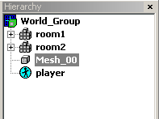
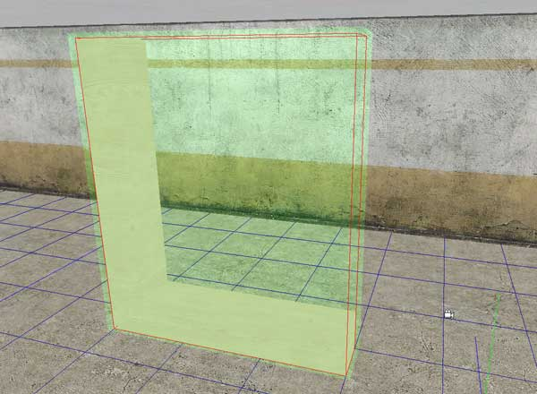
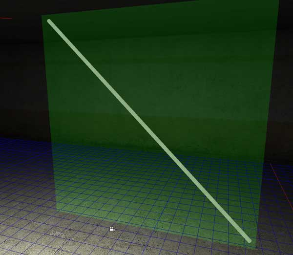
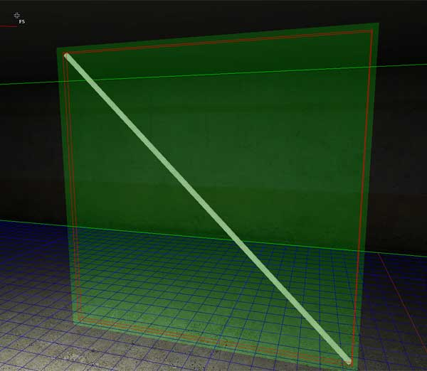
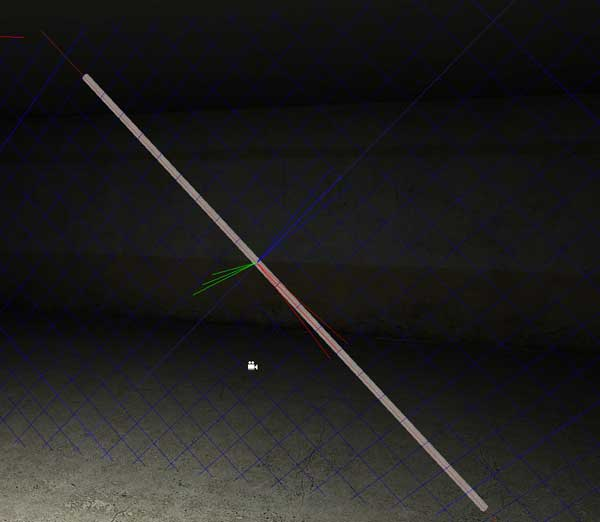
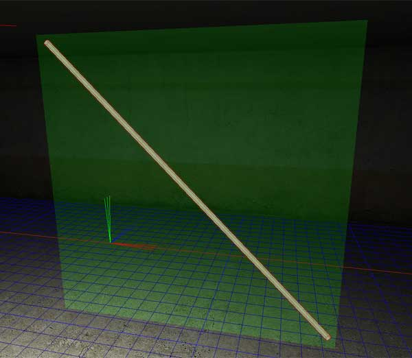

|
Exporting and optimizing levels
Exporting and keeping the geometry optimal is a bit more challenging task than in the previous
MaxED. At some point, anybody doing more work on MaxED2 is very likely
to run into some issues. Most of the possible problem scenarios are
related to the needs of the collision detection and physical simulation
of MP2: they are fast and flexible, but pretty "picky". To
avoid problems appearing during the game, the exporter of MaxED2 was
designed to be very picky too, and to report any problematic areas of
the levels before it allows you to take the level into the game. At
first, this may seem a bit frustrating, but it is for your own good. Do
not worry, with a little practice you will learn how the system works
and these things become a natural course of action.
Let's go straight to business, here are all the possible error
scenarios during exporting:
Can't export! There are N top level entities that are not grouped to a room!
This error appears if there are objects which are not grouped to any room. First aid is to press
Ctrl-E, but if that does not help, there's an object in your level which is not physically situated in any room. You can see the object at the hierarchy list which default position is on the left side of the screen. The root of the hierarchy list has all the rooms and below them are the objects which are not grouped to any of the rooms.

If there are objects there (the player -object is player's FSM and should be there so don't mind it) right-click them and choose "Goto Node" to move the camera so that you see the object.
Then you can choose to manually group it to a proper room or delete or
whatever is appropriate in each case.
Object is concave or flipped (Havok Geometry Error)
Well, that's pretty straightforward. Check the said object that it is not flipped. A flipped object has its faces pointing inwards, which is an invalid state for a dynamic object. Havok collision checks can not handle it. Concave is an invalid shape for a dynamic object. Check the tutorial for
Dynamic objects and animation for how to make convex shapes.
Geometry contains zero area triangles
This is most likely fixed by a simple Fix. Choose the object (or to play it safe, choose them all by pressing
Ctrl-A) in F5 mode and press F. The default value of 0.0005 should be fine, press OK.
If the problem persists, there is something wrong with the geometry. The fix should have given an error of a polygon, write the polygon index number down and go F4 -mode and press L. Write the polygon index number there and press OK. The invalid polygon should be marked with a locator icon. You can try to fix it with
splitting and joining or booleaning the geometry and/or trying a higher fix value.
Some vertices used less than three times
Implicates a problem with polygons, all of these can be taken care of with using the fix as in with "Geometry contains zero area triangles" -error.
Some edges are invalid
The dummy material is being used among normal materials in a dynamic object. A face which has a dummy material is not processed at all. So if there are normal materials in the same mesh, it leads into invalid edges between the dummy face and normal face. If the dynamic object is wholly made of dummy materials, it works.
If you have polygons on a dynamic object which you do not want to draw, use the "collision_nodraw" -category.
Uses materials with inconsistent collision flags
A dynamic object can not have faces with different collision attributes. For instance you can't have a glass material and a metal material in the same object, since glass lets bullets through while metal doesn't. This also applies to static object children. So you can't have a dynamic metal -mesh with a static glass mesh grouped to it. But if you make the child mesh dynamic, it works. If there are several glass-children, make one dynamic and group the rest static glass meshes to it.
Collisions
The collisions are a bit more complex than in the previous game. There are two kinds of collision properties for an object:
Character collisions and bullet collisions.
If an object has only character collisions on, all projectiles will go straight through it, but characters, ragdolls and physical objects will collide to it. For instance blood and gun shells won't collide with objects without bullet collisions.
The exact opposite happens when you turn the collision flags vice versa.
With dynamic objects, when you are grouping objects, the parent decides what collision flags the kids can use and what not. If you check collisions off from the parent but leave the bullet collisions and character collisions as
grayed out, children can have those properties and have collisions on. But if everything is taken off at the parent, no children can have any collisions.
With static objects, all collision flags are individual for each mesh and they do not affect each other.
Optimizing levels
You should take special care of optimizing collisions. When a ragdoll hits a very complex static object, it might cause huge overhead in the physics engine and slow the game down. There are a few shortcuts to optimize objects.
First of all, there is a "Generate Bounding Box Hull" in object properties for static meshes. It does what it says; it generates an invisible collision bounding box around the mesh which only collides with characters. It optimizes the collisions greatly, but the shape will always be a box which is a bit crude. For instance for an object like this:

Here the red lines show how the collision area would look like for an L -shaped object. So you really can't use it here. But it's perfect for instance with pipes which have lots of corners.
Let's take this pipe for instance. It could be a rail at a stair case.

The collision geometry would be pretty complex and a lot of these in a staircase could cause big overhead. Luckily, "Generate Bounding Box Hull" comes to rescue. First we'll open the pipe properties and check the "Generate Bounding Box Hull" on, depending on the pivot, it might come out right. Or like this:

So we need to adjust the pivot so that it is aligned with the object direction. Simply align the grid with one of the sides of the pipe:

Then choose it in F5 mode and press P. The bounding box should now look like this:

Fits like a sock.
The beauty of it is that the bullet collisions stays on the object, so the decals and all will work fine on the object, but if a ragdoll drops over it, it will only use the simple bounding box for collision checks, speeding things up a lot. You should use bounding boxes with most static geometry which resembles a
box.
With dynamic objects there's a flag "Generate Convex Hull", which is a bit more advanced. It makes the closest shape possible to a convex hull of a dynamic object. The problem is that it will take bullet collisions into account. So you can't use this as freely as the bounding box with static objects. Though, you should avoid doing concave dynamic objects from the beginning.
There are no strict rules for optimizing. Optimize as much as you dare, and as long as it feels and looks good, all is well.
|